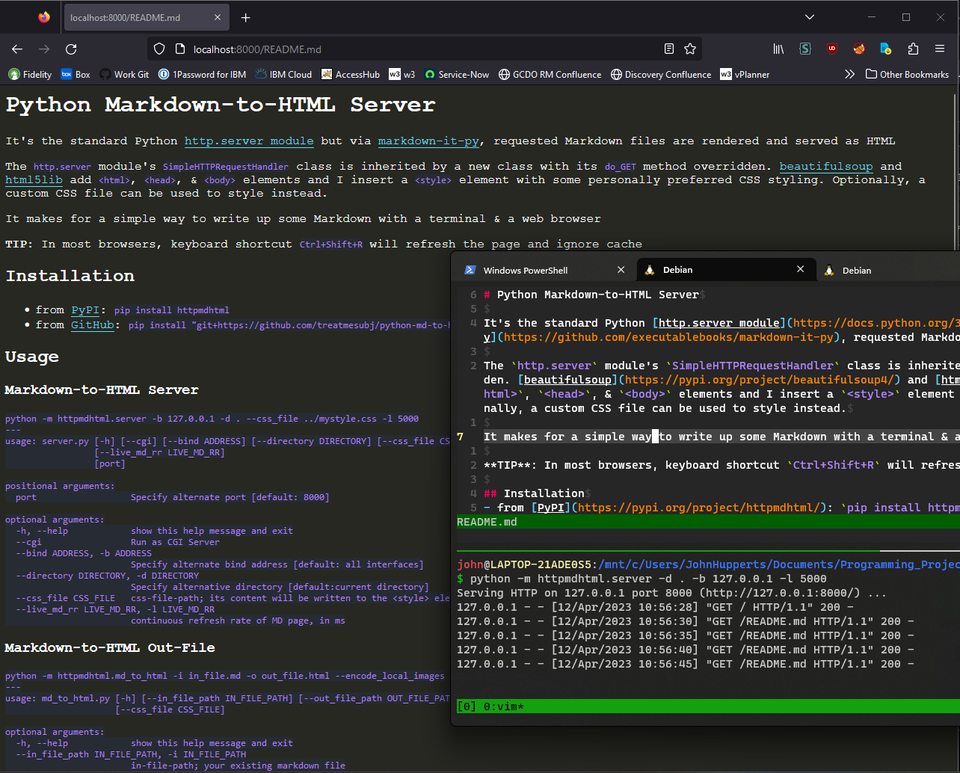

It's the standard Python http.server module but via markdown-it-py, requested Markdown files are rendered and served as HTML
The http.server module's SimpleHTTPRequestHandler class is inherited by a new class with its do_GET method overridden. beautifulsoup and html5lib add <html>, <head>, & <body> elements and I insert a <style> element with some personally preferred CSS styling. Optionally, a custom CSS file can be used to style instead.
It makes for a simple way to write up some Markdown with a terminal & a web browser
TIP: In most browsers, keyboard shortcut Ctrl+Shift+R will refresh the page and ignore cache
pip install httpmdhtmlpip install "git+https://github.com/treatmesubj/python-md-to-html-server"python -m httpmdhtml.server -b 127.0.0.1 -d . --css_file ../mystyle.css
---
usage: server.py [-h] [--cgi] [--bind ADDRESS] [--directory DIRECTORY] [--css_file CSS_FILE] [port]
positional arguments:
port Specify alternate port [default: 8000]
optional arguments:
-h, --help show this help message and exit
--cgi Run as CGI Server
--bind ADDRESS, -b ADDRESS
Specify alternate bind address [default: all interfaces]
--directory DIRECTORY, -d DIRECTORY
Specify alternative directory [default:current directory]
--css_file CSS_FILE css-file-path; its content will be written to the <style> element
python -m httpmdhtml.md_to_html -i in_file.md -o out_file.html --encode_local_images
---
usage: md_to_html.py [-h] [--in_file_path IN_FILE_PATH] [--out_file_path OUT_FILE_PATH] [--encode_local_images]
[--css_file CSS_FILE]
optional arguments:
-h, --help show this help message and exit
--in_file_path IN_FILE_PATH, -i IN_FILE_PATH
in-file-path; your existing markdown file
--out_file_path OUT_FILE_PATH, -o OUT_FILE_PATH
out-file-path; your HTML file to be created
--encode_local_images, -e
in HTML, embed base64-encoded data of local images linked to in your markdown; remove
dependency on presence of external local images
--css_file CSS_FILE css-file-path; its content will be written to the <style> element
